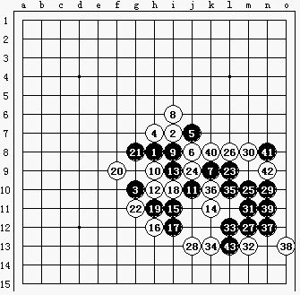

这里让我们看一下日本名人战决赛的第2盘,山口名人开出了名月局,以前大家都对山口的恒星局印象深刻,这次大胆开出黑优局必然有准备。
河村交换执黑,看到白6黑7后,以为山口的8会下在i9(后面黑赢起来也不是很简单),但这次山口又变招了,i6!黑9必然,11强攻,12唯一防.13,15交换感觉黑杀起来要费些脑筋,感觉空间不是开阔了,白22无奈,只得利用16和22的活2对黑下面的进攻造成一些影响,23强!但并不是很难想到,24唯一,25,27都很流畅,使得26,28也是唯一防黑29做43,如果30防在k10那么31在n9就双杀了.实战30还是唯一,31,33活3黑vcf胜!黑23,25,27,29让我们意识到做杀的重要,有人说是28的问题,其实28防在k14,黑也胜了!29n9,30m8,31k12,32L11,31L12后vcf胜!,这盘棋河村杀得很精彩。
 没图
没图［ 有志青年 于 2008-9-18 8:29:48 时奖励此帖[金币加 20 威望加1］
图好象看不见了,能修正吗
［ 有志青年 于 2008-9-18 8:29:42 时奖励此帖[金币加 20 威望加1］
来自励精教室（http://www.ljrenju.com.cn/news/meijin42/mj42match.htm#42meijin2）
我靠……43手被我弄没了~来来来大家猜猜下在哪儿了~哇哈哈哈哈~

 偶补上图～～
偶补上图～～［ 有志青年 于 2008-9-18 8:30:16 时奖励此帖[金币加 20 威望加1］
大家注意棋评和图片的坐标是不一样的……
评得挺好的。不过13、15的交换并没有让黑棋陷入困境，事实上我觉得13以下到23的手段可能是连贯的。24向下活三的话，25跟住即可，优势更大。至于25，那可不是可以和27放在一起用“连贯”形容的，我觉得25是进攻的妙手，全局最大的亮点！正是25手限制了白棋的任何反击，将黑棋的局面展开到了足以取胜的地步。
白8的变化至少早在93年世锦赛上就出现了：

这是一个很有意思的事情：由同一个开局变化竟能引出两种完全相反的杀法（特别是可以说没有经过中盘的拼杀，进攻的连贯性完全基于初期的棋型基础），这是为什么呢？我们不难发现，黑11稳守的手段很有意思，其实在两侧都保持了攻势，12、14的防守动作已经因为右下方无限的进攻可能性而完全变形，这样黑棋就有机会在左边展开进攻。对于白棋而言，白8彻底失去了作用。我个人还是更喜欢这样的感觉。
我还以为是４６名人战呢